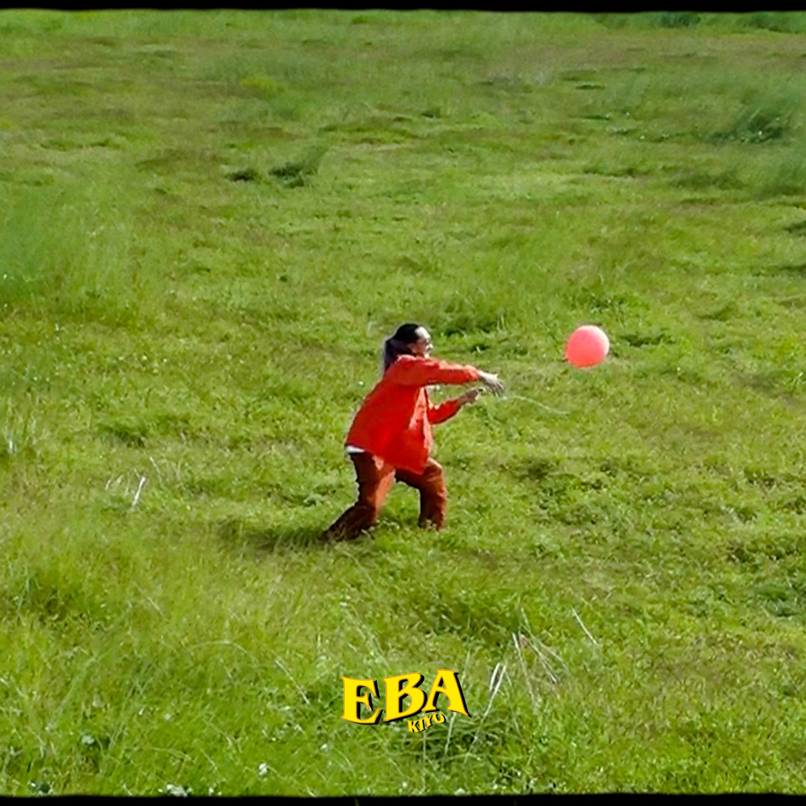

Eba by Kiyo
Yeah uh
Eba sakay na sa kalesa Gawa ng mga kwentong panghabang buhay hindi lamang pang-era
'Pag kasama parang perya 'pag wala ka 'lang eksena
Ikaw gustong makasama magpahanggang mag sitenta
Turing ko sa buhay ko ay komedya na may trahedya
Ngayon gustong magpatuloy pahabain ang nobela
Binuklat bagong libro ako ang nobyo ikaw ang nobya
Sasabihin ko lahat di na kailangan ng serbesa
Gusto ba kita oh giliw
Tanong ko sa sarili habang ligaw sayong mata
Baka mabunyag ang aking lihim
Na tinago nang kay tagal baka ngayon marinig niya
Palaban bakit sayo alipin
Handang daanan ang napakarami na hadlang
Magkasama man kahit walang sabihin
Kumportable na basta katabi at kapiling ka
Pangakong 'di mag-iiba pagtingin ko sayo ay hindi maipinta
Kahit na sabi nila pagmamahal ko sayo ay
Mababaw daw at ikaw daw ay 'di iba sa kanila
Sabi ko naman anong pake nila
Pagtingin ko sayo kaysa kanila ay iba
Oh iba oh iba iba ka
Alam kong gutom ka 'kaw na mag suggest
Turo mo sa'kin bibilhin ko iyong request
Matagal na 'di nagkita sabik na ko bigkasin
Na mahal kita nang 'di lang sa tawag at mga text
Sinta wag na wag kang mag-aalala
Pakita mo sa akin tunay na ikaw 'di ko
Tatapakan ang iyong mga paa kaya halika
Gustong gawin parang 'lang nakatingin
Isasayaw ka parang disco
Paborito ko parang El Bimbo at
Baka pumayag pa ko mag tiktok
Walang tinatago 'di mabibisto aye
Nandito na ko sa inyo (ding dong)
May mang-aagaw ba asan pistol aye
'Di makatiis I miss you 'di mapakali
Ikaw aking bisyo
Gusto ba kita oh giliw
Tanong ko sa sarili habang ligaw sayong mata
Baka mabunyag ang aking lihim
Na tinago nang kay tagal baka ngayon marinig niya
Palaban bakit sayo alipin
Handang daanan ang napakarami na hadlang
Magkasama man kahit walang sabihin
Kumportable na basta katabi at kapiling ka
Pangakong 'di mag-iiba pagtingin ko sayo ay hindi maipinta
Kahit na sabi nila pagmamahal ko sayo ay
Mababaw daw at ikaw daw ay 'di iba sa kanila
Sabi ko naman anong pake nila
Pagtingin ko sayo kaysa kanila ay iba
Oh iba oh iba iba ka
Iba iba iba iba iba iba
Ako yung tipong di basta hihinto
Dire-diretso walang biglang liko
Buksan ang pinto kilalanin kung sino ba ako
Tarantado ako dati pero sayo matino
Nakakasilaw mga ngiti mo na tila ginto
Sisingit ako ng pilit walang pila sa
Agad agad hindi na
Agad agad hindi na
Agad agad hindi na
Agad agad hindi na
Gusto ba kita o giliw Iba ka iba ka
Eba sakay na sa kalesa Gawa ng mga kwentong
panghabang buhay hindi lamang pang-era'Pag kasama parang perya '
pag wala ka 'lang eksena'